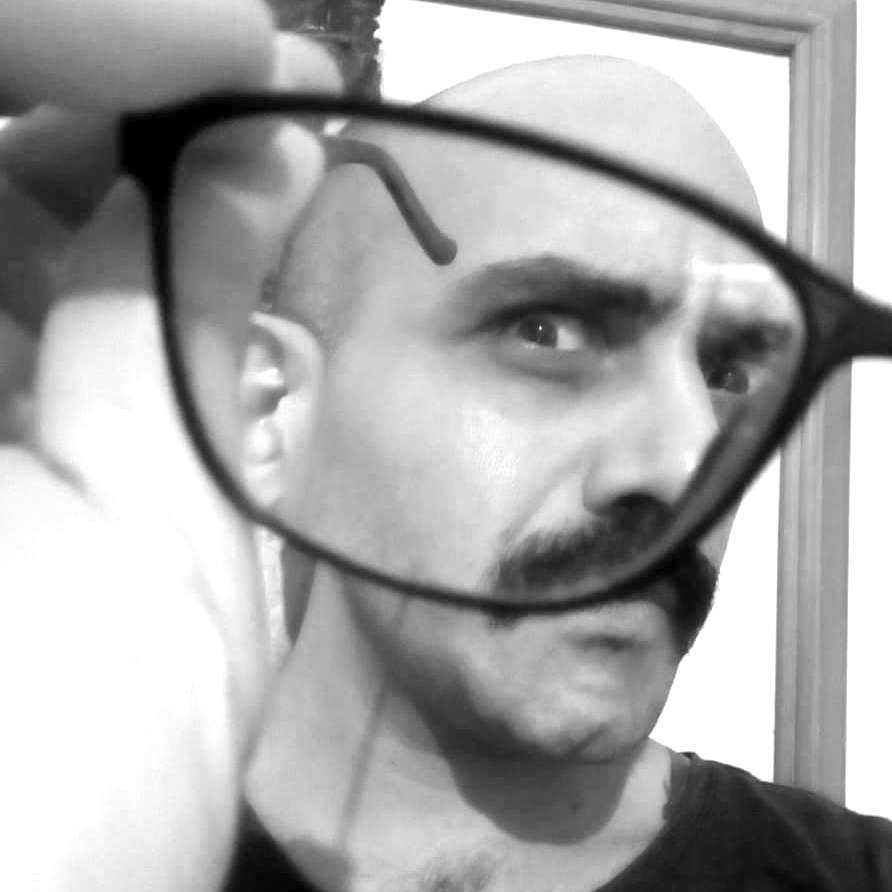

Portfólio
Renato
Pereira
Feitosa

Índice:
⬇⬆
Sobre mim:
-
Também conhecido como renÁtomo pataquÁ ou, simplesmente, PataquÁ 😜.
-
Desenvolvedor web 🕸 ampliando seus conhecimentos sobre front-end e back-end na
 .
.
-
Nasci e cresci em São Paulo-SP 🏙. Atualmente, vivo em Recife-PE🏖 - mas me considero olindense de 💓.
-
Bacharel em Ciências Sociais 🎓 pela Universidade Federal de Pernambuco.
-
Acumulei experiências profissionais com pesquisa social, educação de jovens e adolescentes e na incidência por direitos humanos - principalmente, nas áreas de:
-
direito à comunicação;
-
participação social;
-
direitos da primeira infância;
-
transparência pública;
-
e acesso à informação.
Habilidades:
- Python 🐍
- Django
- Linux
- CSS & HTML
- Pandas
- JavaScript
- Servidores web
- PostgreSQL
- MySQL
Projetos:
Alguns projetos que eu já desenvolvi:
-
Gastos com Publicidade da Prefeitura do Recife - Back-end / Front-end - Uma plataforma que permite ao público a realização de consultas detalhadas sobre os gastos da Prefeitura do Recife com publicidade. Internamente, a aplicação automatiza web scrapings, conversão de dados em PDF para um banco de dados com classificações próprias e avisos sobre atualizações para a equipe do cliente.
Desenvolvido em
 &
&  .
.
-
Mobilidade Sustentável nas Eleições da Região Metropolitana do Recife - Back-end / Front-end - Plataforma para divulgação das propostas para a Mobilidade Urbana feitas por associações de ciclistas da Região Metropolitana do Recife durante as eleições de 2020, além do registro das candidaturas - ao Executivo e Legislativo - que se comprometeram com tais demandas. A aplicação inclui área administrativa personalizada para gerenciamento do conteúdo.
Desenvolvido em & .
-
BiciPai - Back-end / Front-end - Sistema que permite às pessoas usuárias o acompanhamento do processo de vários pedidos de acesso à informação (PAIs) feitos à Prefeitura da Cidade do Recife em uma única plataforma. Além disso, possibilita consultas aos conteúdos e classificação dos pedidos por temática - confira um exemplo público.
Desenvolvido em & .
Alguns links que recomendo:
This is just a dummy footer. Never mind it. 😝